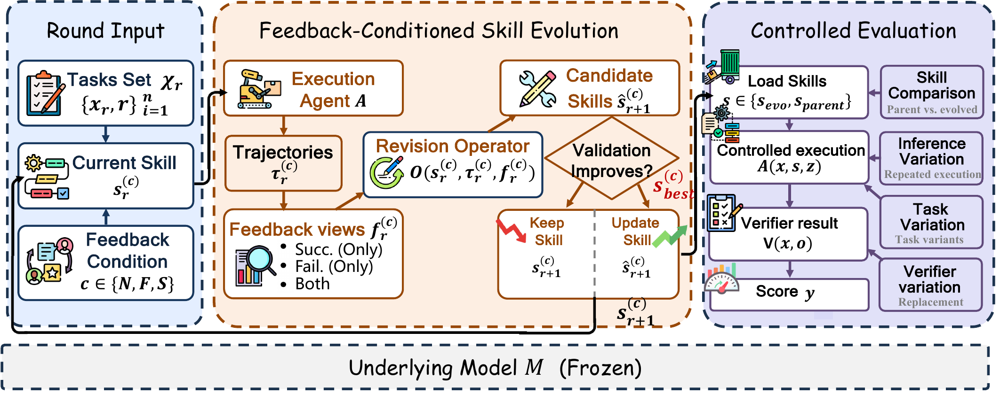

01研究背景与问题定义
智能体技能经常被描述为“执行—反思—重写”的持续提升过程，但多改几轮并不代表学到了可保留的改进。一次候选修改可能修正训练错误，也可能在验证集上偶然更好、在测试上退步；成功轨迹展示做对了什么，却不一定揭示需要修正的原因。论文把研究对象从技能最终分数移到多轮反馈如何产生、筛选和保留修改。
它不是提出一个更复杂的新技能系统，而是在相同执行器、优化器、验证规则和预算下，改变给优化器看的轨迹：成功和失败一起看、只看失败、只看成功。借助逐轮候选、回退记录和独立测试，区分“文本改了”“验证变好了”和“泛化真的变好了”。
| 事件 | 实际能说明什么 | 不能自动推出什么 |
|---|---|---|
| 候选技能与原文不同 | 优化器产生了新指令。 | 新指令有用。 |
| 验证集出现新最好分数 | 候选通过当前选择标准。 | 测试和迁移同步改善。 |
| 后续轮次继续运行 | 搜索覆盖了更多可能修改。 | 收益单调累积，或每轮都值得付费。 |
核心创新在于实验控制和过程证据：将反馈组成当成可干预变量，将被拒修改也计入成本与行为分析。研究因此可以回答失败反馈何时有价值、成功反馈何时能保护已有程序，以及为何“回退保持最好分数”仍不能保证真实进步。
02方法与技术路线
每一条反馈分支从同一父技能出发，跨轮只继承当前技能，不继承一套不断增长的优化记忆。程序接管验证接受规则；如何从轨迹推断通用修复仍由 LLM 优化器决定。
Normal
优化器看到成功 + 失败轨迹。
Fail-only / Success-only
分别只暴露失败，或只暴露成功；空反馈不生成候选。
候选完整验证
验证不下降 → 成为下一轮技能；下降 → 回退当前技能；只有严格变好才更新 best。
匹配反馈：让结论指向信息，而非不同优化预算
主要实验包含三种基础模型和五个基准，但 DeepSeek 不能原生接收 DocVQA 页面图像，未人为加 OCR 改变接口，因此实际是 14 个模型—基准设置、42 条反馈轨迹。每轮运行 40 条训练轨迹，LiveMath 为 36 条；非空反馈触发一次优化器调用，提出至多四项通用最小修改。
失败轨迹能暴露验证器看得见的缺陷，成功轨迹能提示哪些行为应当保留。两者提供的是不同信息：混合反馈可能保全已有程序，失败独用可能更集中地修复具体缺口。只看成功若没有稳定共同规范，容易把偶然策略误当普遍规则。
验证与回退：保留分数的程序，不是保证改进的机制
候选经完整验证后，分数不低于当前状态就可成为下一轮技能；只有严格超过历史最好才刷新 best。运行至十轮、连续五次退步或无操作，或反馈为空时停止。这里“接受当前轮”与“建立新最好”不同，论文还区分字节不同的新最好，避免把相同文件反复计作进步。
回退确保验证记录不会因一次坏补丁永久下降，却不验证推断出来的规则是否真实普适。重复使用同一验证集选择候选也可能筛出偶然匹配。因此最终要在未参与选择的发布测试上评估，而不能用优化轨迹自身当作泛化证明。
稳健性、迁移与推理扩展分别测什么
稳健性探针保持原任务与答案，改变表面表述、无关信息或接口约定；迁移探针则从同源新任务逐步走向新来源与分布变化。它们检验不同强度的复用，不应合并成一个“泛化分”。
额外采样对照从冻结父技能出发：并行采样使用有真值的 oracle any-success，顺序细化只读取上次回答并报告最终答案。它们与一次调用的演化技能比较，检验收益是父策略已有多样性即可恢复，还是需要跨任务保留新的工作流程。oracle 选优不是可直接部署的选择器。
论文原始结构图 · 点击对照

03实验设计与结果分析
多轮修改究竟留下了多少可靠进步
主实验 14 个模型—基准设置、42 条分支；验证与测试严格区分。
| 过程观察 | 结果 | 可支持的判断 |
|---|---|---|
| 候选与验证新最好 | 388 个候选，55 个字节不同的新最好 | 修改活动远多于被确认保留的进步。 |
| 最终选择 | 11 个演化技能，3 个保留父技能 | 不是每个设置都应更新。 |
| 独立测试 | 11 个被选演化技能中 9 个提高 | 验证选择仍会出现测试退化。 |
| 反馈来源 | Normal 选中 9 次，Fail-only 2 次，Success-only 0 次 | 失败信息重要，但混合反馈常更有利。 |
这组计数比“十轮以后平均更好”更能反映机制：优化不是单调学习，而是低接受率的验证筛选。55 个新最好中 38 个在前四轮出现，但 11 个最终演化选择中有 6 个在第六至九轮才出现，因此早停能省钱，也会错过少量决定最终结果的晚期候选。
Success-only 在主设置未入选，并不等于成功反馈永远无效；扩展 SearchQA 模型中存在成功独用胜出的分支。合理结论是信息价值取决于是否能从成功中提取稳定任务规范。
额外采样能否替代持久技能改变
GPT-5.5，共同支持样本与最大给定预算；并行为 oracle any-success，顺序为最终响应。
| 基准 | 父技能 | 演化技能一次调用 | 并行采样 | 顺序细化 |
|---|---|---|---|---|
| SearchQA | 75.64 | 77.93 | 77.50 | 75.79 |
| SpreadsheetBench | 50.53 | 85.77 | 54.80 | 45.20 |
SearchQA 的小幅增益几乎被并行采样恢复，符合回答规范能由多次尝试覆盖的解释。表格任务则需要检查工作簿、执行程序、写入值、保存并复核，额外采样父技能很少自行形成整个程序，因此演化与并行仍差 30.97 点（以显示值计算）。
重要反例是 GPT-5.5–LiveMath：验证选出的技能在测试下降 6.6 点，稳健性却增加。说明更符合一套探针并不保证另一分布获益；不能只选正向指标来宣称统一进步。
04贡献、局限与综合评价
核心贡献：把技能进化重新表述为选择过程
论文最有价值的部分是把修改、接受、最好状态和独立效果拆开记录，并通过匹配反馈找到不同证据的作用。它支持失败对诊断的重要性，也支持成功记录在混合反馈中保护既有程序；这比笼统主张“让模型多反思”更具可操作性。
过程诊断也有测量边界
大幅收益集中在具有可验证程序缺口的表格任务，而高分已接近上限的 DocVQA 很少改进。相同预算对不同任务的搜索价值因此不同。部分迁移探针样本较少，它们更适合揭示具体失效，而非精确估计普遍迁移率。
最关键的后续问题是如何选择停止时机而不偷看测试：可预先规定独立的滚动验证或新样本验证，在同总调用预算下比较固定十轮与收益停滞停止。若减少候选却保留最终测试收益，才能说过程观察已经转化为更有效的进化控制。
综合判断，这项工作并未否定技能自进化，而是限定它成立的含义：有价值的进步来自反馈驱动的候选搜索、验证过滤与跨任务保留，且收益高度依赖任务和模型。持续产生新文本是活动指标，不是能力增长证据。